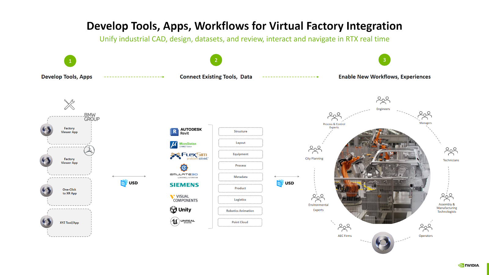
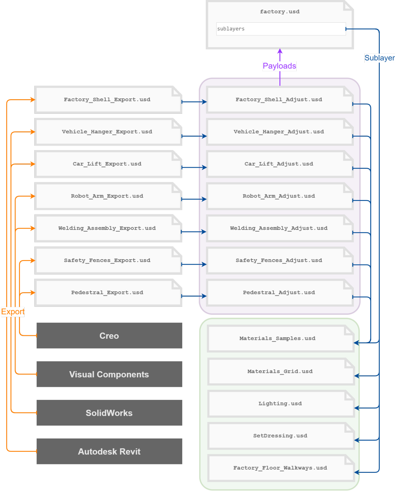

An application platform for building OpenUSD-native 3D tools, simulation environments, and industrial digital-twin workflows. It packages scene composition, rendering, physics, connectors, and extensible UI/runtime components so teams can turn shared 3D data into production apps instead of building the infrastructure stack from scratch.
Omniverse sits above OpenUSD and uses it as the common scene representation. CAD exports, BIM data, robotics assets, material libraries, and simulation metadata can all meet in one composed scene instead of being trapped in tool-specific formats.
The platform is geared toward industrial and robotics use cases: building digital-twin applications, running physically grounded simulation with rendering and physics in the same environment, and connecting operational data and enterprise systems to a live 3D model.

Omniverse applications are typically built on Kit, an extension-based runtime:
.kit file defines the application, its dependencies, and settingsAll Kit apps share the same USD-native runtime, so assets and scenes move between them without conversion.
The platform value is orchestration: many tools still exist, but Omniverse gives them one shared runtime and one shared scene representation.
Nucleus is the collaboration backbone: it manages shared USD assets and enables multi-user live editing. Key features:
Common extension categories include stage browsing, property editing, toolbars, consoles, PhysX simulation, and custom domain UI.
A representative Omniverse workflow for manufacturing has three layers:
Factory twins are assembled as layered USD assets with shared materials, lighting, and payloads. Each supplier or team can own its layer without giving up a single usable scene. The platform value is orchestration: many tools still exist, but they share one runtime and one scene representation.
The key insight is that Omniverse is not a replacement for domain tools — it is the shared layer that lets them interoperate. A robotics engineer, a facilities planner, and a simulation researcher can all work on the same USD scene with their preferred tool.
